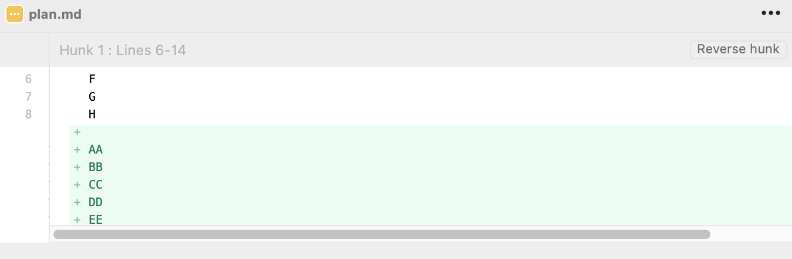

也許有天會用到這個功能。
簡述
假設目前的紀錄長這樣：
his-branch 上有一個 AA BB CC DD EE 的 commit，修改的內容如下：

但我想把他拆開成 5 個 commit，這時候就可以利用 rebase 來處理。
首先開啟 rebase 設定我們想要重設的範圍：
1 | git rebase -i HEAD^ |
接著進入互動模式以後，注意到我們想要更新的那一筆 commit 紀錄：
這邊我們要把 pick 改成 edit，好讓我們可以重新設定這筆紀錄，設定好存檔離開以後，會看到目前的狀態如下：
1 | 停止在 a852694... AA BB CC DD EE |
能看到 rebase 碰到 edit 時就會自動停下來，讓你重新對這筆 commit 做調整，直到你最後調整完時執行 git rebase --continue 才會完成整個 rebase 的動作。
好，為了達成我們一開始的目的，接下來的流程會是：
- 取消原本的
AA BB CC DD EE紀錄 - 分別提交
AA、BB、CC、DD、EE - 結束 rebase
1 | git reset HEAD^ |
reset 後打開 sourcetree 會看到目前的狀態長這樣：
會看到現在多了 Uncommit changes，這是因為 reset 的 mixed 模式（預設值）會把檔案丟回「工作區（Working Directory）」所導致的。這正是我們要的結果，所以不用擔心。
附註：你可能會發現怎麼原本的 AA BB CC DD EE 還在？這一點在之後結束 rebase 時就會重新調整了，不用擔心。
總之接下來只要分別提交 AA BB CC DD EE 的紀錄就行了：
1 | git commit -am 'AA' // 提交 AA 的內容 |
附註：記得要調整內容後再提交，不要一次全部提交上去
修改完以後的狀態會長這樣：
跟我們希望的結果差不多了，這時候就能結束 rebase 了：
1 | git rebase --continue |
大功告成啦：